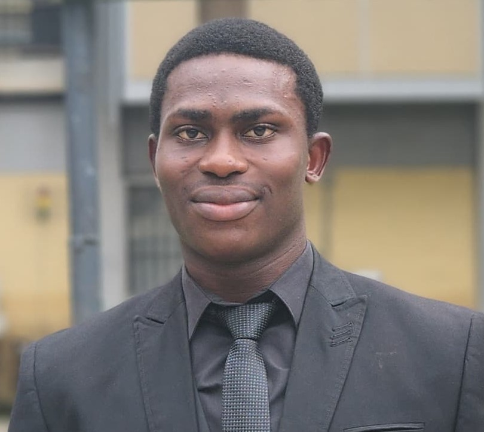

Toyyib Talabi

Objective Statement
Pursuing a role as a front-end developer with a passion for creating immersive user experiences and
nine years of freelance experience creating websites for a network of dedicated clients.
Educational Background
- Primary school Education - Allahu Akbar International school (2005-2011)
- Secondary School Certificate Examination - Vanguards Academy (2011-2017)
- Bachelor of Science, Mechanical Engineering - University of Lagos (2017-2024)
Work Experience
- Internship - Automedics Nig. Ltd.
May 2023 - October 2023
- Diagnosis of the faults present in an Automobile
- Take out simple maintenanace on motor vehicles
- Assist Senior Technicians in carrying out major repairs of Automobiles
Skills
- Organizational Skills
- Leadership Skills
- Microsoft Office Skills
Others